function hill_estimator(x::Vector{Float64})
n = length(x)
# Maximum likelihood estimates of the pareto parameters
θ = minimum(x)
α = n / (sum(log.(x)) - n * log(θ))
if α <= 1.0
# If alpha is less than 1, the mean is infinite.
# In this case this estimator won't work, so fall
# back to the sample mean and variance.
return sample_mean_variance_estimator(x)
end
# Estimate the mean and standard error from the MLE parameters
μ = α * θ / (α - 1)
σ = abs(μ) * sqrt( 1 / (n * (α - 1)^2) + 1 / (α * n)^2 )
# Return a struct holding the estimated mean and standard error
return EstimatorResult(μ, σ)
endCan we do better than the trimmed mean?
Julia
Experimentation
Statistics
Abstract
Testing out some ideas for dealing with outliers in A/B testing, comparing the trimmed / winsorized means with a new estimator based on a combination of the Pareto or Generalised Pareto distributions and the delta method.
Post insipration
This post was heavily inspired by the work by Vehtari et al. (2015) on Pareto Smoothed Importance Sampling, which tackles the related problem of how to deal with extreme values in importance sampling.
A day in the life of a data scientist
Picture the situation: you’re a data scientist / statistician / economist at an e-commerce company. You’re working with a team who plan to run an A/B test to evaluate the impact of a new feature or promoption, and critically they want to evaluate the impact of the change on revenue. Sounds easy, so you get to work!
Your randomisation and analysis units are visitors, and since the goal is to measure the impact on total revenue, your main metric is revenue per visitor. You plan to perform a t-test against the null hypothesis that the average revenue per visitor is the same in both control and treatment, and if you reject the null hypothesis you’ll report the effect size, with a confidence interval, and pop the champaign!
As a responsible experimenter, you kick things off with a power analysis, to estimate the required sample size you’ll need for this test. To do this you run a query to get the variance of the revenue per visitor over the last few weeks. And here, things start to go wrong… your variance is huge! At this rate, you’ll have to run your test for months in order to measure any reasonable effect.
So now what? You plot a histogram of your revenue per visitor metric to see what’s going on, and you see something like this:
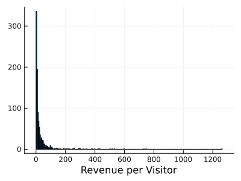
And here’s the problem. The distribution of the metric is highly skewed, with lots of zeros, then some “normal” spenders, and then a very small number of extreme spenders - we’ll call these our outliers. And it’s these outliers that are disproportionatly increasing the variance of your average revenue per visitor estimate, hurting your power, and eventually making you wait months to estimate the impact of your experiment.
Outliers in A/B testing
The previous section was a hypothetical story, but I think it’s quite a common scenario. But what can be done? My usual steps are:
- First, check if the outlieres are real. It’s often the case that outliers are actually just bad data, in which it might be reasonable to exclude them or fix them.
- Do some variance reduction! Cuped is a very effective method of reducing the variance of your metric based on data from before the start of your experiment. It’s always worth trying and it’s about as close to a free lunch as you can get when it comes to improving A/B testing power. However, cuped reduces variance, not skew, so it’s likely your power will still be hindered by the outliers.
- If the previous two steps doesn’t reduce your variance sufficiently, then it’s time to look at trimming or windsorizing. These are very powerful techniques, but come with a large drawback: you are introducing bias into your estimates.
Don’t log transform!!
On almost every blog I see, when the issue of a skewed metric arises, someone will recommend log-transforming the metric. While this will certainly make your metric less skewed, and may improve power, it’s a big no for financial metrics like revenue.
This is because when you transform your metric, you also change the null hypothesis you are testing and therefore the interpretation of any effect you measure. For revenue, you really care about the effect on the (arithmetic) mean revenue per visitor, because improving this is what will translate into improving total revenue. However, the log transform means you are testing for an effect on the geometric mean, which is not the same and improving it does not necessarily translate into improving your bottom line, leading to potentially bad business decisions.
Trimming and windsorizing are specifically designed to deal with outliers and make your estimator more robust. With trimming, you filter out all samples that are above some threshold, while with windsorizing you apply a cap, so that all values above a threshold are capped to that threshold. Both are very effective at reducing variance, however because you are removing or capping the top X data points, you introruce a potentially large negative bias, so I usually treat it as a bit of a last resort.
But is this the best we can do? In this post I’m going to explore how we might formalize this problem with extreme value theory, and see if we can find some estimators that perform better than the trimmed or winsorized means. Here, by “better”, I mean achieving similar levels of variance reduction, while introducing less bias.
Extreme value theory and power laws
Disclamer
I’m far from an expert in extrme value theory, I’ve really only learned about the topic in the last few weeks. Take this section with a pinch of salt.
Extreme value theory is a branch of statistics dealing with the extreme deviations from the median of probability distributions.1 This is exactly what we are dealing with here - outliers are messing with our statistics. So perhaps there are some tools from extreme value theory that we can use to reduce the bias in our trimmed / winsorized mean? Say hello to the second theorem in extreme value theory:
Second Theorem in Extrme Value Theory
For a wide range of univariate probability distributions, the tail of that distribution can be well modelled by the Generalised Pareto distribution (GPD).
This sounds relavent! Perhaps we can describe the outliers in our skewed revenue distribution as a GPD. So what does a GPD look like?
The Pareto and Generalised Pareto distributions
The GPD is a more flexible version of the well known Pareto distribution (Newman 2005), also known as the 80-20 rule. Both the GPD and Pareto distribution are characterized by having “power law” tails, where for large X the distribution tends towards:
The maths
The probability density function of the Pareto distribution is given by: This distribution has two parameters,
and
:
controls the minimum of the distribution:
controls the slope of the distribution.
The probability density function of the GPD is given by:
The parameters of this distribution are more complex. In this post I’m going to only look at cases where . In this case:
controls the minimum of the distribution:
controls the scale of the distribution.
controls the slope of the power law tail of the distribution. Comparing it to
.
In the case where the GPD is the same as the Pareto distributon.
You can see the power law tails in Figure 2 below, where I compare the Pareto and GPD distribution with the log-normal distribution, which does not have a power law tail:
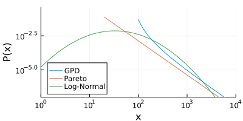
The distributions are plotted on a log-log scale, and you can see that both the Pareto and GPD distributions are linear for large values of (indicating a power law), while the LogNormal distribution never becomes linear, it is always curving downwards.
The GPD and Pareto distribution differ at small values of , where the GPD is more flexible and can curve up or down, while the Pareto distribution remains a pure power law for all values of
.
Infinite Variance
Power law type distributions are interesting because depending on the slope of the tail, the population might have infinite mean or infinite variance. Specifically for the GPD and Pareto distributions we have the following three cases:
| Pareto | GPD | |
|---|---|---|
| 1. Infinite Mean and Variance | ||
| 2. Finite Mean, Infinite Variance | ||
| 3. Finite Mean and Variance |
Table 1: Three important scenarios for the sample mean and variance of the GPD and Pareto distributions.
But what does infinte mean or infinite variance really mean? The sample mean or variance is always finite, even if the population distribution from which that sample was drawn has infinite mean or variance. However, if the population distribution has infinite mean / variance, then the sample mean / variance will not converge as the sample size approaches infinty.
This can be seen in Figure 3 below, where I simulate estimating the sample variance as a function of sample size for the Log-Normal and GPD distributions, where the GPD distribution has infinite variance. Each grey line represents one sample, where I calculate the sample variance cumulatively, adding one point at a time.
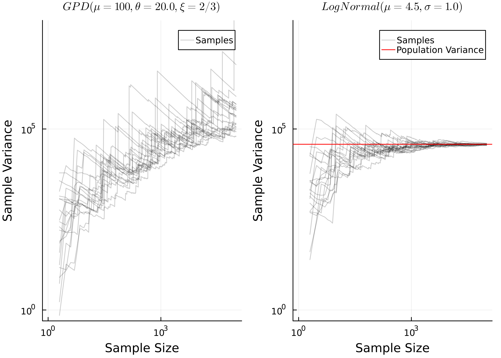
You can see that for the log-normal distribution, as the sample size gets large the variance converges towards the population variance, while for the GPD distribution it does not converge, and instead just keeps increasing.
This is a problem, because when performing inference about the mean via the t-test, we construct the t-statistic from the sample mean and sample variance. If, for example, we are performing a one-sample t-test to test the null hypothesis that the mean of the population distribution is equal to a specific value , we would calculate the t-statistic as:
Where is the sample mean,
is the sample variance and
is the sample size. Therefore, refering back to the three cases from Table 1:
- If we are in case (1) where both the mean and variance are infinite, then there is basically no hope for any inference about the mean, since it’s infinite! If you have a distribution with such large outliers that you are in this case, then you’ll always struggle to perform any inference about it’s mean. I’m not even sure what the interpretation of such an analysis would be…
- If we are in case (3) then both the mean and variance are finite. This is trivial, and it’s likely that the regular t-test based on the sample mean and variance will perform fine. Probably you’re data wouldn’t even look like it has significant outliers.
- Case (2) is the interesting one. The mean is finite, so we may want to perform inference on it, however the variance is infinite, which will break the t statisitc which uses the sample variance.
So to summarise:
- It’s common for the tails of a wide variety of distributions to be well described by the GPD distribution.
- Under certain conditions, the GPD distribution can have infinite variance but a finite mean.
- This would make any sample drawn from that distribution have a sample variance that does not converge as the sample size increases, and instead the variance will just increase as the sample size increases.
- This will break out t-statistic, which requires the sample variance.
This sounds a lot like the situation we have with outliers in our revenue per visitor metric! Perhaps the tail of that distribution follows a power law, where we have infinite variance. This would explain why our variance is so large, and therefore why our experimental power is so poor!
Inference about the mean of a power law distribution
So if we cannot use the sample variance, what can we do? Well really we only use the sample variance so that we can estimated the standard error of the mean, , as:
Is there a way we can do this without the sample variance? Yes, with maximum likelihood estimation and the delta method! This approach takes three steps:
- Assume a parametric distribution for your population
- Fit your distribution to your data using maximum likelihood estimation
- Calculate the mean and the standard error of the mean from your maximum likelihood fit. This requires calculating the hessian of the log-likelihood of your data, and using the delta method.
Detailed method with maths
- You have a sample of size
:
- Assume a parametric distribution for your population:
, where
- Define the Log Likelihood as:
- Estimate
by maximizing
:
- Calculate the hessian matrix of
. This is the matrix of second derivatives of
.
- Use the hessian matrix to estimate the covariance matrix for the standard errors of
, from (Taboga 2021).
- Estimate the maximum likelihood estimate of the mean from
.
- Use the delta method to estimate the standard error on the mean,
, where
is the first derivative (jacobian) of the mean function:
Note: if the parameters are all independent, meaning the covariance matrix is a diagonal matrix, then the above equation simplifies to:
Where are the diagonal elements of
.
This method is nice because it doesn’t require us to estimate the sample variance at any point, so we are able to estimate the mean and standard error on the mean, even when the population variance is infinite!
This method does, however, have some drawbacks - you need to make an assumption about the parameteric form of the population distribution, and if that is incorrect it’s very likely the estimator will be biased. Also, even if the parametric form is correctly specified, it’s usually the case that the maximum likelihood estimator is not unbiased by default, it usually requires some bias correction to achieve that. This goes beyond the scope of this blog post, but would certainly be possible to explore.
Now let’s see how this will work with the GPD and Pareto distributions.
The Pareto (Hill) estimator
While the more basic Pareto distribution might not have as much flexibility as the GPD, and therefore might not fit the tail of your distribution as well, the maximum likelihood estimate can be calculated analytically, making it much simpler and faster to implement.
The maximum likelihood estimator of the Pareto distribution is often known as the Hill estimator, and the parameters are calculated as follows (see Rytgaard (1990) for the derivation):
The maximum likelihood estimator for the mean and standard error are then calculated from these parameters as:
Derivation of the mean and standard error
The mean of the Pareto distribution is given by:
The parameters are independent, so there is no covariance. Their standard errors are given by Malik (1970) (via wikipedia) as:
We can calculate the standard error on the mean using Equation 2:
The two derivatives are:
So finally substituting it all in we can derive the following equation for the standard error on the mean:
This is implemented in Julia below:
The GPD estimator
For the GPD estimator it’s more complicated, because there is no closed form analytical solution to the maximum likelihood estimation. This is a well known challenge in extreme value theory and many methods have been proposed to fit the GPD to a sample.
Here I will be using the method proposed by Zhang and Stephens (2009), which was already implemented in the ParetoSmooth.jl package. I will then use the great automatic differentiation built into Julia in ForwardDiff.jl to estimate the gradient and hessian, which I use to estimate the standard error on the mean via Equation 1.
The full implementation in Julia is here:
using ParetoSmooth: gpd_fit
using ForwardDiff: gradient, hessian
function gpd_log_pdf(params::AbstractVector, x::Vector{Float64})
sum(logpdf.(GeneralizedPareto(params...), x))
end
function gpd_mean(params::AbstractVector)
mean(GeneralizedPareto(params...))
end
function gpd_estimator(x::Vector{Float64})
n = length(x)
# Estimate the GPD parameters numerically
u = minimum(x)
x_centered = x .- u
ξ, σ = gpd_fit(x_centered, 1.0; sort_sample=true, wip=false)
params = [u, σ, ξ]
if ξ >= 1.0
# If xi is greater than 1, the mean is infinite.
# In this case this estimator won't work, so fall
# back to the sample mean and variance.
return sample_mean_variance_estimator(x)
end
# Perform the automatic differentiation to get the
# required gradient and hessian
H = hessian(z -> gpd_log_pdf(z, x), params)
Σ = (-1 * H) ^ -1
dμ = gradient(gpd_mean, params)
# Estimate the mean and the standard error
μ = gpd_mean(params)
v = transpose(dμ) * Σ * dμ
# Return a struct holding the estimated mean and standard error
return EstimatorResult(μ, sqrt(v))
endAs an aside, this really shows off some of the strengths of Julia - I was able to implement this quite complex method in such a short and easy to read piece of code. However, as it’s a numerical solution it will run slower and be less stable than the analytical Hill estimator for the Pareto distribution.
How do these estimators perform?
To evaluate these estimators, I ran some simulations. First I simulated data coming from the Pareto and GPD distributions, with finite mean but infinite variance. Since I simulate this data I know the true population mean, so I can compare the estimators and see how well they do at estimating the population mean. I then repeat this process many times, each time collecting the estimated population mean and standard error.
I compare three estimators:
- The sample mean / variance estimator. This is the standard method of estimating the population mean used in the t-test.
- The Hill estimator. This is the maximum likelihood estimator based on the assumption that the data comes from a Pareto distribution.
- The GPD estimator. This is the maximum likelihood estimator based on the assumption that the data comes from a GPD distribution.
Testing on Pareto data
First let’s look at how the estimators perform on data that came from a Pareto distribution. As expected, Figure 4 shows that the baseline method of using the sample mean doesn’t work well. It has skewed estimates, with high variance. However, both the hill estimator and the GPD estimator perform much better, with the estimates centered on the true population mean and with much lower variance.
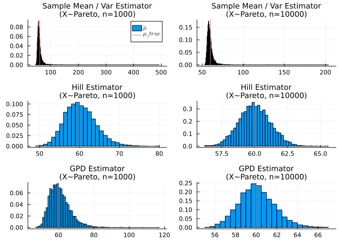
Now we can quantify the total error that the estimator makes as the mean squared error:
This is a convenient metric to use because we can break it down in terms of bias and variance:
Below you can see how the bias, variance and MSE compare. In this case the bias is low for all methods, while the Hill estimator has the lowest variance and MSE, closely followed by the GPD estimator.
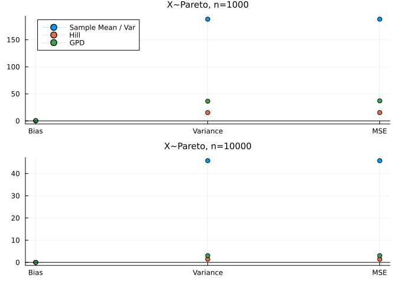
Finally, just having a good estimate of the mean is not enough - we need to be able to estimate the standard error on the mean reliably for the estimator to be useful for A/B testing.
To validate whether the estimate of the standard error is good, I look at the distribution of standardised residuals, which is the difference between the estimated mean and the true population mean, divided by the standard error:
If the standard errors are good, the standardised residuals should roughly follow a t-distribution with mean = 0, standard deviation = 1 and degrees of freedom = n - 1.
We see below that the Hill estimator is good for both sample sizes, while the GPD works well for the larger sample size, but is not as good for the small sample size. The sample mean and variance is poor, again showing the skewed shape.
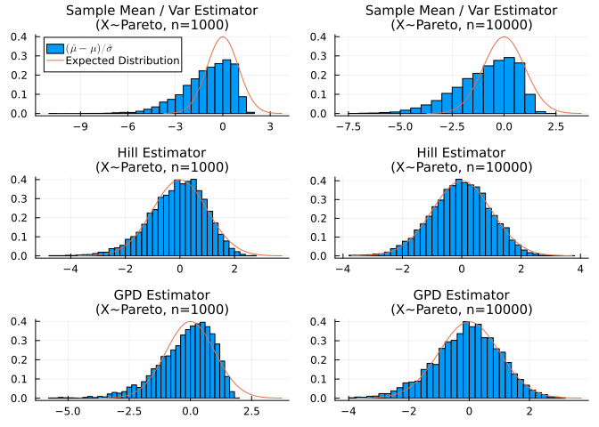
So overall the Hill and GPD estimators work well for Pareto distributed data, with the Hill estimator performing slightly better. But this is expected, because the data was drawn from the Pareto distribution, which is exactly what the Hill estimator expects. So what happens if the data comes from a GPD distribution?
Testing on GPD data
Here I do the same analysis again, but this time using data coming from a GPD distribution for my testing. This distribution is more complex, so will be a harder test for the Hill estimator, as it breaks the parametric assumption we made.
First looking at the distributions of the mean estimates, we see again that the mean / variance estimator is very skewed, and the GPD estimator looks good. However, this time the Hill estimator is very bad. It’s not skewed - the estimates have a nice, normally distributed shape, but they are not even nearly centered on the true population mean.
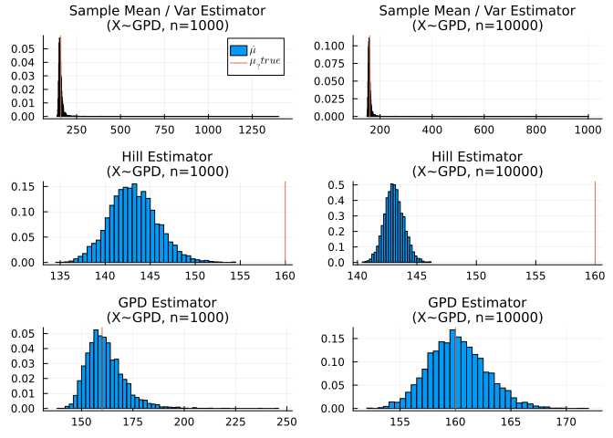
This is an example of the bias that can easily be introduced with this method. Becuase we made an assumption about the parametric form of the population distribution, and got that assumption wrong, the mean estimate is highly biased.
You can see it clearly in the MSE and bias results in figure Figure 8. The hill estimator has low variance, but high bias, meaning that overall the MSE is much worse than the GPD estimator. Interestingly, even with this high bias it still has a lower MSE than the baseline sample mean / variance estimator, because the variance of the baseline mean/variance estimator is so high! This wouldn’t hold in general though, probably with a higher sample size or slightly different parameters the hill estimator would perform the worst of all.
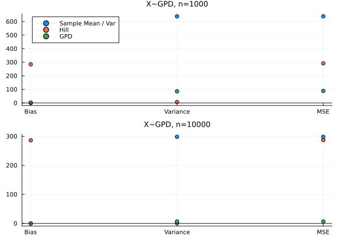
Finally we can check the standardised residuals again, and as expected the hill estimator is far away from the expected t-distribution. THe GPD estimator again works best, closely matching the t-distribution for the larger sample size.
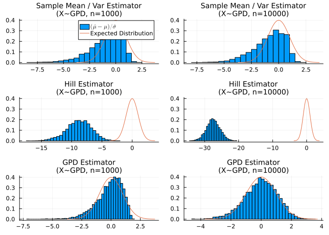
So it seems that the GPD distribution works better in general, but if the assumptions of the hill estimator are met (i.e. the samples come from a Pareto distribution), then the hill estimator is better. Of course, the GPD estimator will fail in the same way that the hill estimator did if we were to test it on a dataset that breaks it’s assumptions, it’s just a more flexible distribution so its assumptions are less likely to break.
Appling extreme value theory to the trimmed mean
Now as both the Hill estimator and GDP estimator outperform the simple mean/variance estimator for power-law type data, we can try to apply them to our revenue A/B testing problem. However, we want to use the new estimators only in the tail. The rest of the distribution is unlikely to be power-law distributed, so the new estimators would fail there.
This is where the comparison with the trimmed and windsorised means comes in. In both of those methods, an arbitrary threshold is chosen, and all values that are above that threshold are designated as outliers and either ignored or capped. But what if we were to keep the outliers as they are, and use our new estimators on those, while the non-outliers are estimated by the regular mean-variance estimator. We can then combine the two estimates to get the overall estimate of the mean and the standard error for the whole sample.
Detailed method with maths
- Set the trimming quartile to split the data into “outliers” and “inliers”. This is an arbitrary percentile of the distribution, and typically only a small percentage of the data should be classified as outliers.
- Estimate the mean and standard error for the inliers and outliers separately. Now you should have the following stats:
- Now we can combine the estimates to get the estimated mean and standard error for the whole sample. This method of combining the results together is built on top of the fact that the overall distribution can be thought of as a mixture of two distributions - the outliers and inliers. So we can combine the moments of the distribution as if they are a mixture (see wikipedia).
Note - the above equation for is slightly different to what you’ll see in wikipedia. This is because we are combining the standard error on the mean, not the standard deviations.
To test this out, I’ll create a synthetic dataset which is a mixture of a GPD and two lognormal distributions. This will make the main distribution bimodal (and so not too easy for our method) but with a power law tail that gives it infinite variance. This distribution is shown in Figure 10.
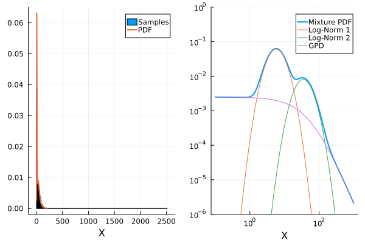
Again I perform very similar simulations to the previous section - estimating the MSE, variance, bias and the MSE of the standardised residuals. In an ideal world, the MSE and variance will be as low as possible, the bias will be 0, and the MSE of the standardised residuals will be as close to 1 as possible. I also calculate the coverage of 95% confidence intervals of the estimates, which is the percentage of times that the true population mean is within the 95% confdience intervals of the estimate. If the estimator is working well it should cover the true value 95% of the time. I calculate all these metrics as a function of the trimming quantile.
Here I will compare the following estimators:
- The simple mean / variance estimator. This is the standard method of estimating the population mean used in the t-test. It is independent of the trimming quintile.
- The trimmed mean / variance estimator. The data is trimmed at the trimming quintile before being fed into the sample mean / variance estimator, meaning any samples above the trimming quintile are excluded.
- The winsorized mean / variance estimator. The data is winsorized at the trimming quintile before being fed into the sample mean / variance estimator, meaning any samples above the trimming quintile are capped at the trimming quintile.
- The hill tail estimator. This estimator uses the hill estimator for the samples above the trimming quntile, and the sample mean / variance estimator for the samples below, and then merges the results together.
- The GPD tail estimator. This estimator uses the GPD estimator for the samples above the trimming quntile, and the sample mean / variance estimator for the samples below, and then merges the results together.
The simulation results are shown below in Figure 11.
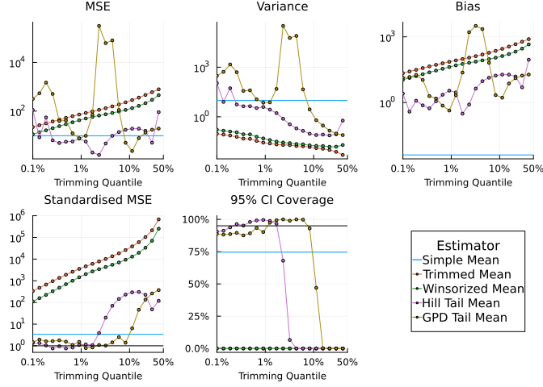
These results are interesting and in my opinion very promising for this approach!
- The simple mean is the least biased of all the methods, but does not have good coverage of standardised MSE, indicating that the confidence intervals would not work well for this estimator, breaking our A/B tests.
- The trimmed and winsorized means both behave as expected. The more we trim, the bias increases, and the variance decreases. Overall, the increase in bias is larger than the decrease in variance, meaning that the MSE gets worse. And the bias is so large that the coverage is terrible - the confidence intervals never contain the true population mean. This demonstrates why the trimmed and winsorized means are so difficult to use, because while the variance decreases, you introduce significant bias.
- Our new estimators seem to work well, as long as the trimming quntile is not too large. Both have good coverage and standardised MSE, meaning that can be more reliably used as A/B testing metrics. The variance, bias and MSE are closer to the values for the simple mean. This means we get similar performance on average, but with a better behaved estimator that we can construct reliable confidence intervals for.
- The hill tail estimator works better than the GPD tail estimator as long as the trimming quintile is kept below ~1%. Above that, the coverage of the hill estimator deteriorates, while the GPD tail estimator maintains its coverage until ~10%. This is expected because the GPD tail estimator is a more general distribution, so can describe a bigger portion of the tail which is not exactly Pareto distributed.
- The GPD tail estimator is less robust. This is likely because of the numerical estimation method. Between 1% and 10% the variance, bias and MSE go extremely high.
Overall, based on this, I think the hill estimator has the most promise. While it breaks down at high trimming quantiles, as long as the correct trimming quantile is chosen it works well. It is also computationally simpler than the GPD estimator, because it has an analytical soltuion.
Summary
So it looks like we might be able to do better than the trimmed or winsorized means! This is still early stages, more work needs to be done to test this, but overall the hill-tail estimator has better coverage than the regular sample mean, while maintaining a good level of bias and variance.
Some interesting next steps would be to select the trimming quantile automatically, for example using a similar method to Clauset, Shalizi, and Newman (2009), as the hill estimator is very sensitive to this choice, or exploring bias corrections to the MLE estimates.
Execution Details
Installed packages:
StatsPlots (0.15.5)
ParetoSmooth (0.7.4)
LaTeXStrings (1.3.0)
ForwardDiff (0.10.35)
Distributions (0.25.92)
StatsBase (0.33.21)
Execution time: 10 minutes, 15 seconds, 685 millisecondsReferences
Balkema, August A, and Laurens De Haan. 1974. “Residual Life Time at Great Age.” The Annals of Probability 2 (5): 792–804.
Clauset, Aaron, Cosma Rohilla Shalizi, and M. E. J. Newman. 2009. “Power-Law Distributions in Empirical Data.” SIAM Review 51 (4): 661–703. https://doi.org/10.1137/070710111.
Malik, Henrick John. 1970. “Estimation of the Parameters of thePareto Distribution.” Metrika 15 (1): 126–32.
Newman, MEJ. 2005. “Power Laws, Pareto Distributions and Zipfs Law.” Contemporary Physics 46 (5): 323–51. https://doi.org/10.1080/00107510500052444.
Pickands III, James. 1975. “Statistical Inference Using Extreme Order Statistics.” The Annals of Statistics, 119–31.
Rytgaard, Mette. 1990. “Estimation in the Pareto Distribution.” ASTIN Bulletin: The Journal of the IAA 20 (2): 201–16.
Taboga, Marco. 2021. “Covariance Matrix of the Maximum Likelihood Estimator.” Lectures on probability theory and mathematical statistics. Online Appendix. Kindle Direct Publishing. https://www.statlect.com/fundamentals-of-statistics/maximum-likelihood-covariance-matrix-estimation.
Vehtari, Aki, Daniel Simpson, Andrew Gelman, Yuling Yao, and Jonah Gabry. 2015. “Pareto Smoothed Importance Sampling.” arXiv. https://doi.org/10.48550/ARXIV.1507.02646.
Zhang, Jin, and Michael A Stephens. 2009. “A New and Efficient Estimation Method for the Generalized Pareto Distribution.” Technometrics 51 (3): 316–25.